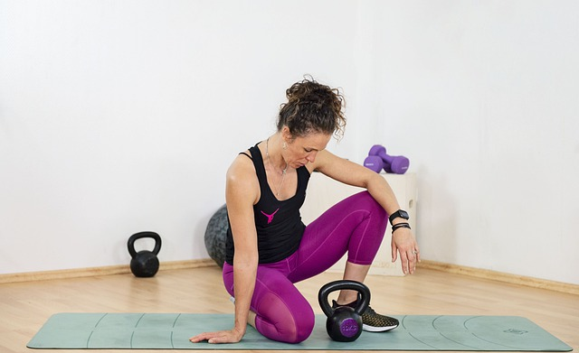
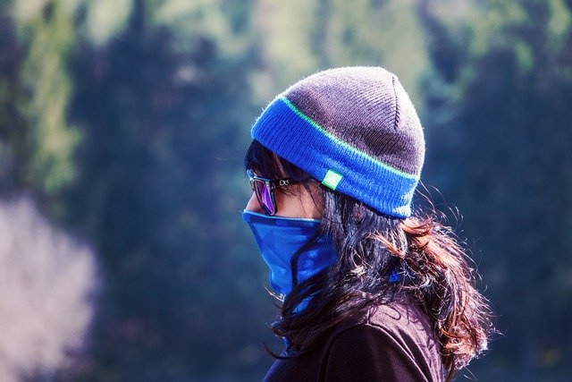

FITNESS TRENDS 2021 – WHAT FITNESS WILL LOOK LIKE POST COVID-19
Around about this time of year we like to share our predictions for the fitness trends set to emerge in the forthcoming year, but this year is slightly different. As Big Ben tolled and we all raised a glass to welcome 2020, none of us could have ever predicted how much our lives would change come the end of March. Mask wearing, social distancing, curfews, lockdown, and restrictions have all become the norm. For the foreseeable future this is how we must live our lives now, or at least until a vaccine can be found for COVID-19 and we can perhaps go back to doing some of the things we once took for granted. In previous years, fitness trends have been a lot more faddy, with unusual twists on basic fitness principles and group classes geared towards fun and sociability. 2021 however is focused much more on practical solutions to help get people fit and healthy in a safe way. And there are two big trends that are clearly paving the way in terms of how fitness is looking in 2021… online and outdoor!
Online Fitness
Online workouts have been providing people with not only fitness, but structure, a sense of community, and a chance to socialize, albeit virtually. Whether it’s scheduled Zoom calls with your mates, Facebook live sessions with your regular fitness class or pre-recorded YouTube vids, we’ve all managed to adapt the way we workout to suit the current situation. And it’s a good thing too, as it’s looking highly likely that this is going to continue in 2021.
Whilst it may not be an ideal solution, many of us are discovering that we’re a lot better at working out at home than we thought we’d be. In fact we’ve discovered that exercising at home:
Is way more convenient – you can workout whenever it suits and fit it in around your own timetable
Saves you time– there’s no more time wasted on traveling to the gym, not when all you gotta do is roll out of bed and stagger downstairs.
Means you can wear what you want – you don’t need to get togged up in your best Sweaty Betty’s when it’s you, yourself and I sweating it out in your living room. Can’t be bothered to get out of your jammies… hey, who’s gonna know!?!
Saves you money – No more gym membership or class fees, most at home workouts are free.
Offers more variety – there are so many different things to try and because no one’s watching you (well, unless you’re on Zoom) it doesn’t matter if you don’t get it quite right. Always fancied trying yoga? Give it a go, there are tonnes of good yoga videos out there. Or how about Clubercise, Salsa, or Zumba? If you’ve got the space, then give it a go, you never know you might find something new that you absolutely love. And when you love something, you’re much more likely to stick at it.
But of course, there are some drawbacks to exercising at home on your own, one of which is lack of motivation. Because let’s face it, there are evenings when you could quite easily bin off that HIIT sesh in favour of a nice hot bath and a glass of wine, I mean who wouldn’t?!? Which is where a scheduled Zoom class would probably work out better for you, and at least hold you accountable and therefore much more likely to attend. Lack of space and lack of equipment have also been cited as reasons against home workouts, but if this is the new ‘norm’ we need to find ways to make this work for us. Whereas in 2020 we may have dithered about and thrown excuses around left, right and centre, 2021 is the year we sort our crap out and come up with solutions. Bodyweight exercises will be crucial for this, things like squats, knee raises, sit ups etc. all require very little space and zero equipment, so there really are no excuses.
Before many of us would have shied away from video link ups and live streaming, but our lives have changed so much and we’ve all become a lot more technologically adept, and so this way of working out has become completely normal to us. In a strange way it has in fact connected us more, we actively seek out opportunities to connect with like minded people and to work out together, whereas we may not have even given eye contact to someone at the gym – other than ourselves in the mirror obvs 😉
Outdoor Fitness
Another fitness trend for 2021 is outdoor fitness. OK, OK so we get that this is hardly a new thing, we’ve been exercising outdoors for like forever, but the thing with trends is that you kind of need something new to happen and at the moment we’re in limbo, which means we’re simply doing what the situation allows us to. Even when we were in the darkest days of the strictest lockdown restrictions we were still allowed to go outside for exercise, and this meant that lots more people ventured out into the great outdoors to take up new leisure pursuits.
From couch to 5k’s, hiking, walks with the family, and small group boot camps, we have embraced al fresco fitness with open arms as a way to not only keep fit but to also help with our mental health too. And with so many of us now working from home, it’s a lot easier to head out for a run first thing or head out on a bike ride at lunchtime because there’s no longer the commute eating up precious minutes from our day. Suddenly we’ve claimed back a bit of extra time, and we’re loving it!
Wilderness activities such as kayaking and sea swimming have also seen a huge boom in popularity, with more and more people throwing caution to the wind and using the ‘new normal’ to venture out of their comfort zones and try new things. It’s made us braver, more resilient and more up for it and this attitude is something we’ll definitely be taking with us into 2021.
The fitness industry has adapted to life in lockdown and so too have we. We are much more appreciative of life’s simple pleasures, we know that it is just as important to have a healthy mind as it is to have a healthy body, we realise that fresh air and nature play an essential role in this and we are most definitely up for a challenge. 2020 has been a funny old year and who really knows what 2021 has in store for us. But whatever comes our way, we’re ready and waiting!